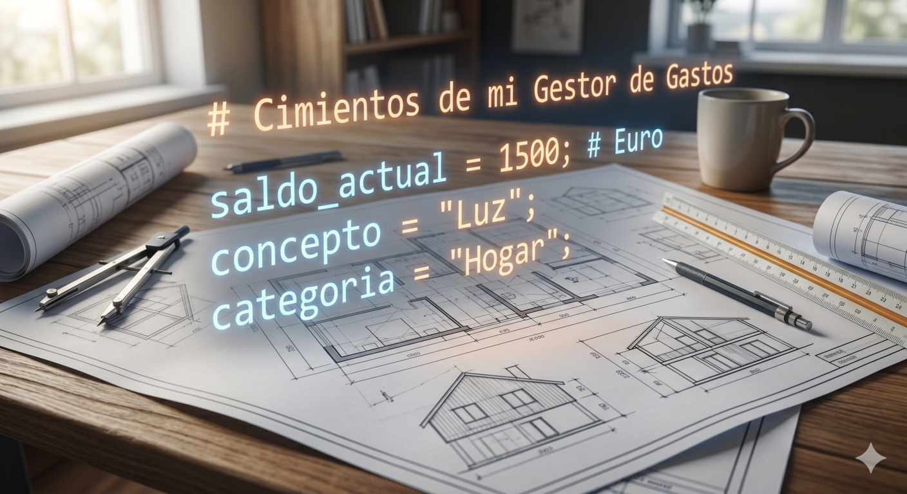

1. Los datos

Ya tienes tu entorno listo y sabes cómo se estructura un programa. Ahora toca aprender el idioma de verdad.
Todo gran proyecto empieza por los cimientos. Cuando un arquitecto diseña una casa, no empieza construyendo el tejado; primero asegura una base sólida que pueda soportar todo el peso de la estructura. En programación, ocurre exactamente lo mismo.
Antes de que nuestro Gestor de Gastos pueda calcular si has ahorrado dinero este mes o avisarte de que te has pasado del presupuesto, necesitas aprender a manejar la materia prima de la informática: los datos.
En este bloque vamos a descubrir cuáles son las piezas fundamentales que componen el lenguaje Python. A lo largo de los próximos tres apartados, aprenderás a:
- Crear "cajas" virtuales en la memoria de tu ordenador para guardar información.
- Hacer que el ordenador procese esa información (sumando, restando o comparando gastos).
- Establecer un canal de comunicación directo para que la máquina te pregunte datos y te responda con resultados.
¡Prepara tu entorno de trabajo, porque a partir de aquí empezamos a escribir código de verdad!
2. Objetivos del bloque
Responde todas las preguntas del cuestionario.
00:00: